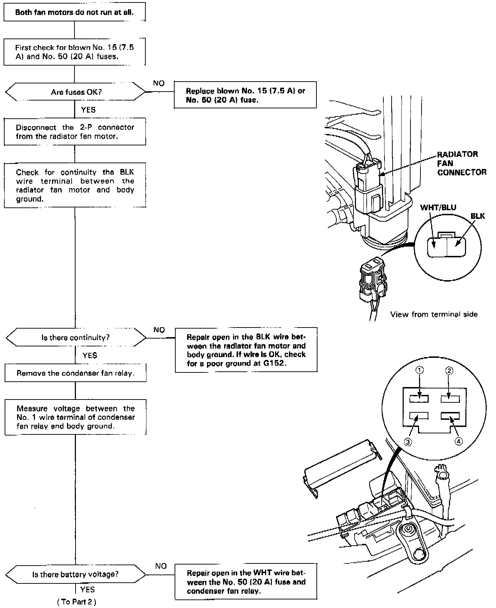
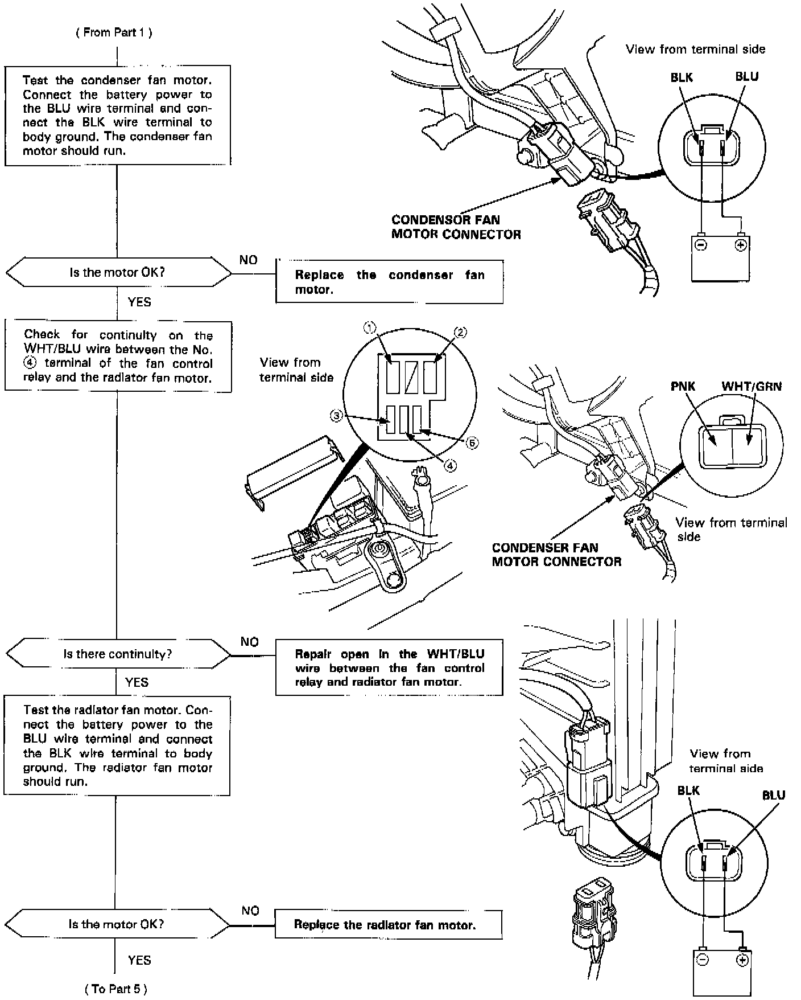
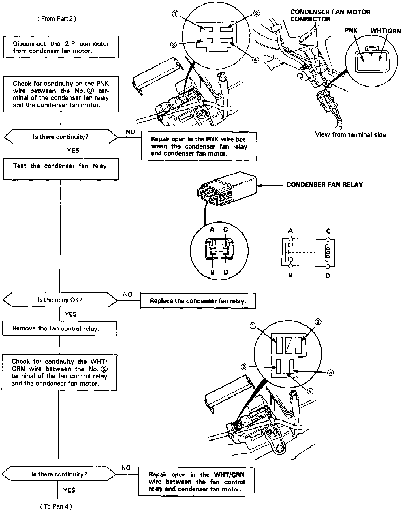
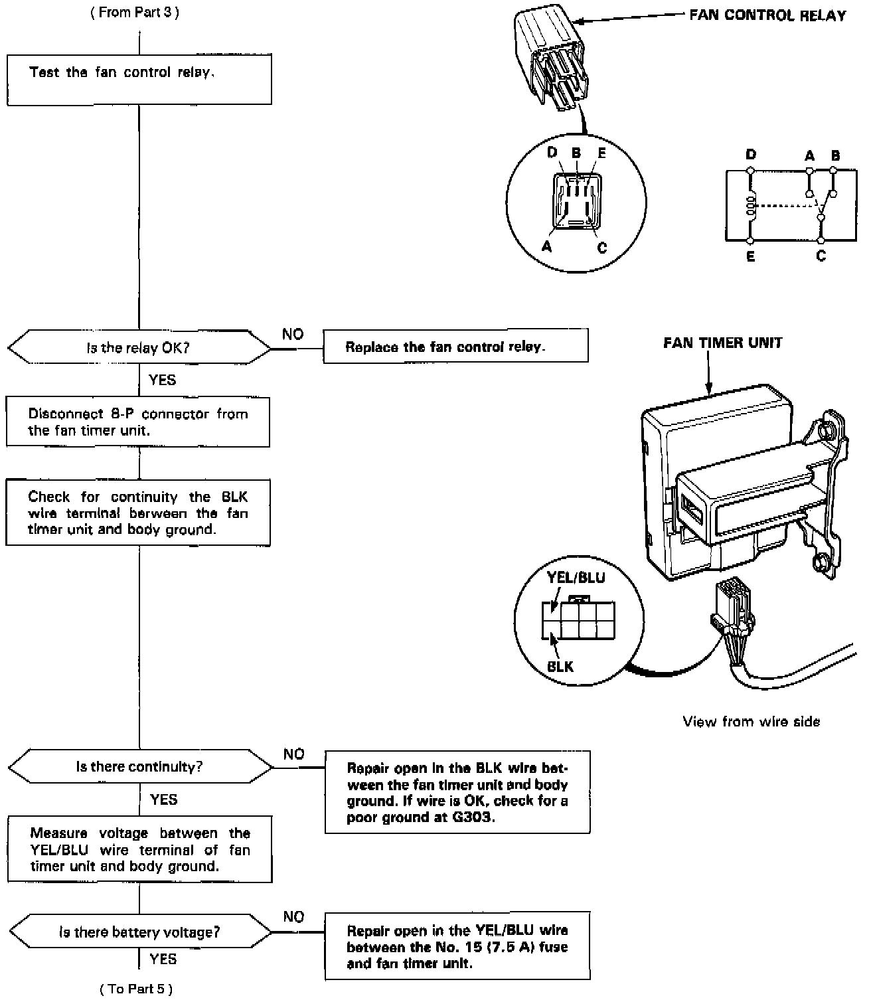
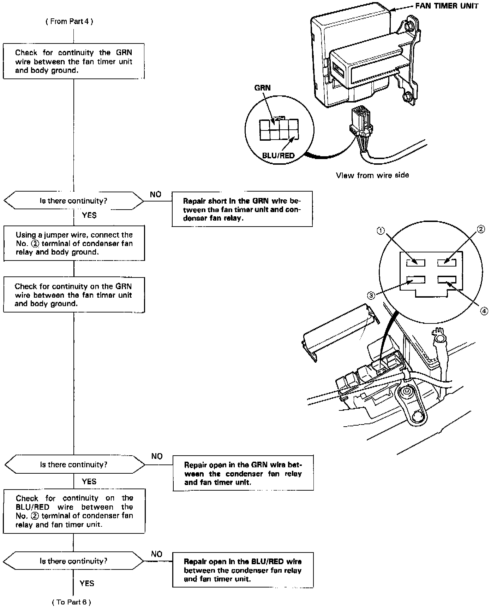
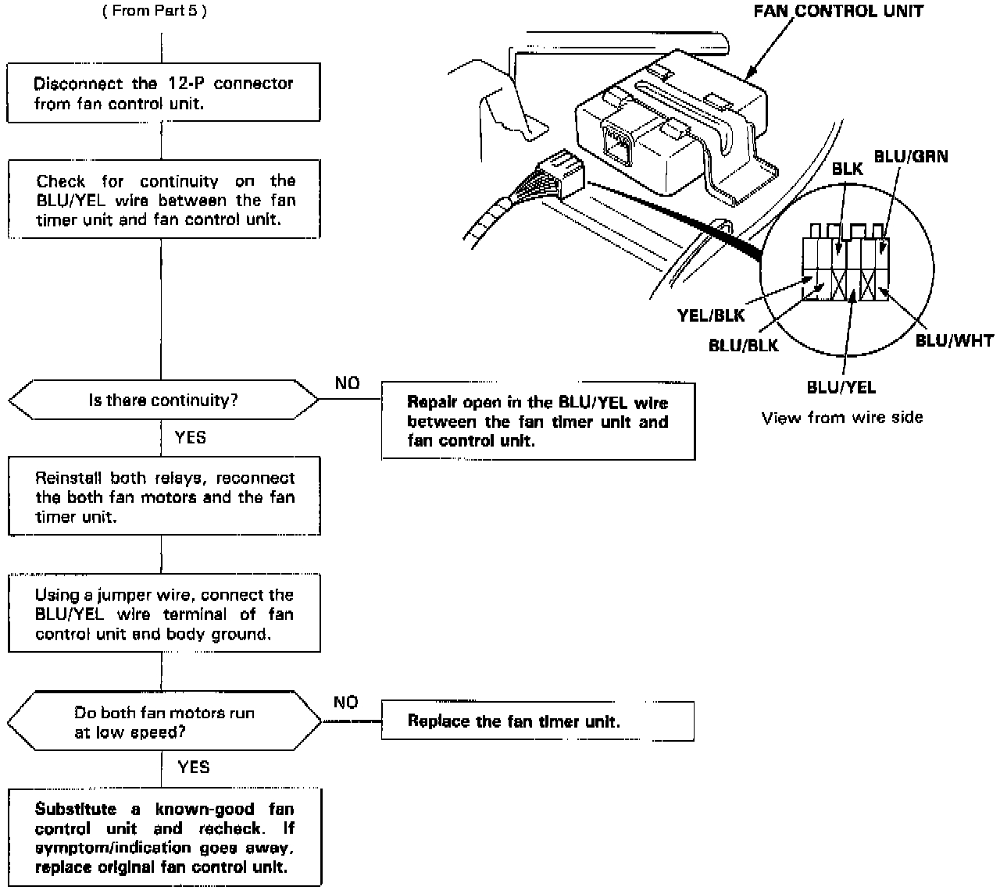

Both Fan Motors Do Not Run At All
Fan Motors Don't Run, Part 1 Of 6:

Fan Motors Don't Run, Part 2 Of 6:

Fan Motors Don't Run, Part 3 Of 6:

Fan Motors Don't Run, Part 4 Of 6:

Fan Motors Don't Run, Part 5 Of 6:

Fan Motors Don't Run, Part 6 Of 6:
